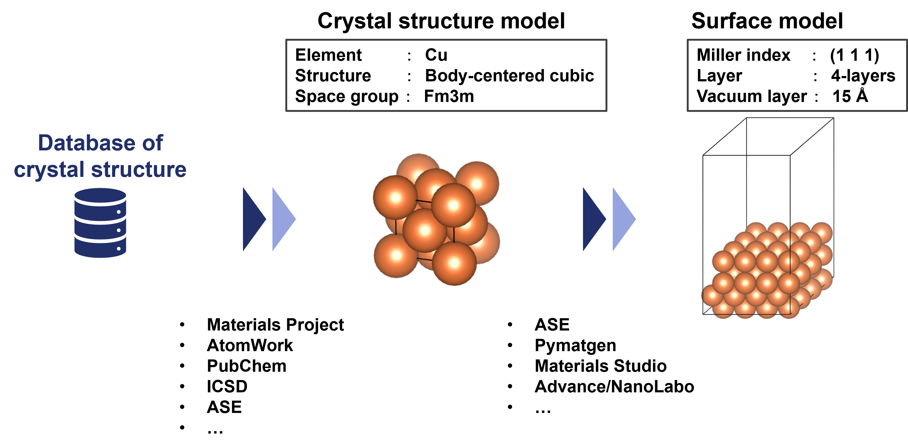
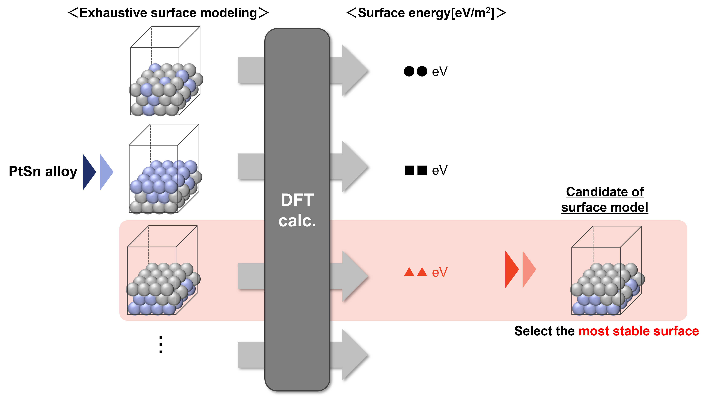
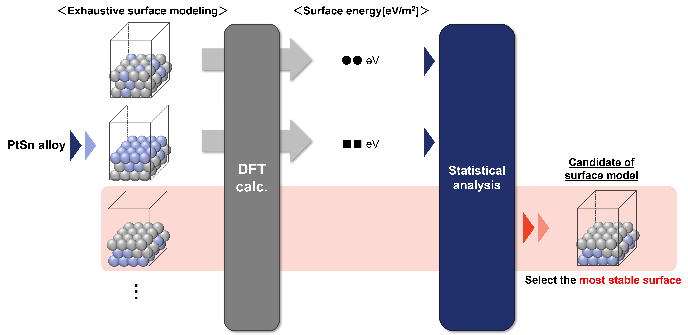

2. Classification of Surface Modeling
Surface modeling methods can be broadly classified into two categories: “when the surface structure is already known” and “when the surface structure is not known.”
2.1. When the Surface Structure Is Already Known
Note
- TEM (Transmission Electron Microscopy)
By irradiating a sample with electrons and detecting the transmitted or scattered electrons, atomic arrangements and compositions can be obtained.
- STM (Scanning Tunneling Microscopy)
By bringing a metal probe close to a sample and detecting the tunneling current generated, surface structures can be obtained.
- XAFS (X-ray Absorption Fine Structure)
By irradiating a sample with X-rays and detecting the fluorescent X-rays, the bonding states on the material’s surface can be obtained.
- XPS (X-ray Photoelectron Spectroscopy)
By irradiating a sample with X-rays and detecting the number and energy of emitted electrons, the bonding states on the material’s surface can be obtained.
As shown above, when the surface structure is known, surface modeling can be performed by obtaining crystal structure data and slicing the surface.
An example method for obtaining crystal structure data is shown below:
- Materials Project
A database of first-principles calculation results of materials developed at MIT (Massachusetts Institute of Technology).
- AtomWork
An inorganic materials database that includes data extracted from scientific and technical literature, developed by NIMS (National Institute for Materials Science) and MPDS (Material Phases Data System).
- PubChem
A chemical substance database published by NCBI (National Center for Biotechnology Information).
- ICSD (Inorganic Cristal Structure Database)
An inorganic crystal structure database developed by FIZ Karlsruhe.
- ASE (Atomic Simulation Environment)
A Python package that allows the construction of crystal structure data by inputting composition, crystal structure, and lattice constants.
- ASE
A Python module for performing atomic simulations.
- pymatgen
An open-source Python library for materials analysis.
- Materials Studio
Paid software for modeling and simulating materials.
- Advance/NanoLabo
A GUI program package compatible with open-source materials analysis software.
From the above, when the surface structure is already known, surface modeling can be performed by obtaining crystal structure data and slicing the surface.
2.2. When the Surface Structure Is Not Known
As mentioned earlier, surface structures can be determined through various analyses. However, in the case of catalyst and battery materials, metals or alloys, which are reaction sites, are dispersed at the nanoscale. Therefore, it is difficult to know the surface structure at the atomic level through the analyses mentioned above.
In this case, surface modeling is generally performed by modeling all possible surface structures, calculating the surface energy using DFT (Density Functional Theory) calculations, and selecting the surface structure with the minimum surface energy.
Therefore, when the surface structure is not known, all possible surface models are created using the surface modeling method for “when the surface structure is already known”, and the surface modeling is performed by selecting the surface structure with the minimum surface energy.
However, if there are multiple combinations of possible surface structures, searching for the most stable surface structure using DFT calculations can be time-consuming. Thus, statistical processing methods like those shown below are used to find the surface structure with the minimum surface energy with fewer DFT calculations.
- Monte Carlo Simulation
An optimization algorithm that uses random values generated from various probability distributions.
By performing multiple random simulations, the optimal solution can be found.
- Genetic Algorithm
An optimization algorithm that mimics the mechanism of biological evolution.
By algorithmizing phenomena such as the survival of stronger individuals and mutations, the optimal solution can be searched for.
- Quantum Annealing
An optimization algorithm that mimics the mechanism of metal annealing.
By reproducing temperature control in annealing using quantum mechanics, the optimal solution can be comprehensively searched using quantum properties.
While surface modeling using Monte Carlo simulations or genetic algorithms has been widely performed, challenges remain, such as not being able to obtain the optimal solution or requiring significant time for exploration. In this context, quantum annealing is considered a useful method for surface modeling with many combinations, as it can more accurately find the optimal solution in less time and at a lower cost.
Therefore, the next page introduces the principles of quantum annealing.